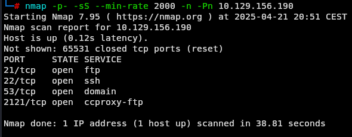
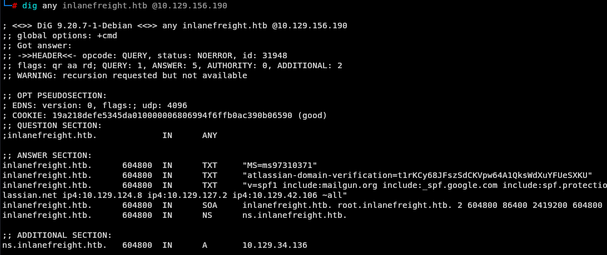

Laboratorio de Footprinting - Fácil
Enunciado
La empresa nos encargó Inlanefreight Ltdrealizar pruebas en tres servidores diferentes de su red interna.
Además, nuestros compañeros de equipo encontraron las siguientes credenciales
“ceil:qwer1234”
y señalaron que algunos de los empleados de la empresa estaban hablando sobre claves SSH en un foro.
Los administradores han almacenado un flag.txtarchivo en este servidor para monitorear nuestro progreso y medir el éxito. Enumere el objetivo completo y envíe el contenido de este archivo como prueba.
Enumeración
nmap -p- -sS --min-rate 2000 -n -Pn <IP>

nmap -p21,22,53,2121 -sCV -n -Pn <IP>
 Fijemonos en un detalle en la enumeración de los puertos 21 y 2121 en la descripción o banner en uno pone (ftp.int.inlanefreight.htb y en el otro pone Ceil’s FTP)
Fijemonos en un detalle en la enumeración de los puertos 21 y 2121 en la descripción o banner en uno pone (ftp.int.inlanefreight.htb y en el otro pone Ceil’s FTP)
Puerto 21
Las credenciales ceil:qwer1234 son válidas para el servicio FTP en el puerto 21.
ftp <IP> 21
ceil
Password:qwer1234
 Listamos el contenido sin embargo no vemos nada
Listamos el contenido sin embargo no vemos nada
 Salimos
Salimos
exit
Para el puerto 22, intentamos entrar pero no podemos acceder con las credenciales que disponemos actualmente
ssh ceil@10.129.156.190
Puerto 53
Nos ponemos a enumerar y encontramos esto:
dig any inlanefreight.htb @10.129.251.72

dig axfr inlanefreight.htb @10.129.251.72
 Con esta información tenemos ips de servidores internos del supuesto dominio. Sin embargo no vi más.
Con esta información tenemos ips de servidores internos del supuesto dominio. Sin embargo no vi más.
Puerto 2121
Intentamos acceder por el puerto 2121 podemos acceder con las credenciales dadas hacemos algo de enumeración.
 Cuando listamos el contenido oculto en la ruta en donde entramos vemos la carpeta
Cuando listamos el contenido oculto en la ruta en donde entramos vemos la carpeta .ssh donde se suelen guardar las claves de usuarios.
 Lo dicho, entramos en la carpeta y vemos la clave ssh para el usuario actual. Procedemos a descargarla para intentar entrar a la máquina con este recurso.
Lo dicho, entramos en la carpeta y vemos la clave ssh para el usuario actual. Procedemos a descargarla para intentar entrar a la máquina con este recurso.
 Lo dicho intentamos acceder utilizando este recurso y nos dice que debemos modificar los permisos del archivo, para que no sea accesible por otros.
Lo dicho intentamos acceder utilizando este recurso y nos dice que debemos modificar los permisos del archivo, para que no sea accesible por otros.
 Le cambiamos el permiso al archivo id_rsa con
Le cambiamos el permiso al archivo id_rsa con
chmod 600 id_rsa
Y entramos
ssh ceil@<IP> -i id_rsa
 Ahora listamos el contenido del servidor
Ahora listamos el contenido del servidor
 Y tenemos la flag.
Y tenemos la flag.
Conclusión
Este laboratorio demostró cómo una combinación de malas prácticas —desde la exposición de credenciales en Internet, la configuración insegura del DNS que permite listar direcciones IP internas, hasta un servidor FTP sin restricciones que aloja archivos confidenciales como claves SSH— puede derivar en el compromiso total del sistema.
La fase de footprinting fue fundamental para identificar vectores de ataque sin necesidad de utilizar fuerza bruta ni técnicas de explotación complejas.
Si te sirvió de algo este tutorial ya para mi es más que suficiente, si me puedes decir en que podemos mejorar te lo voy a agradecer un montón.
Escríbeme por cualquiera de las vías